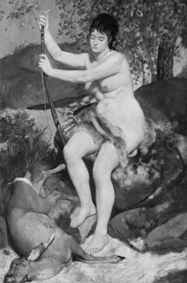

Bu karşılıklı tanışmadan sonra pek fazla zaman geçmemişti ki Tauris kralı geldi tapınağa. Kral, Orestes'le arkadaşı Plades'i biraz sorguladıktan sonra onların tanrıça Artemis ve Tauris halkı adına kurban edilmesi buyruğunu verdi askerlerine. Tanrılar adına yapılacak törenle ilgili hazırlıklar için de tapınağın rahibesi İfigeneya'ya bir şeyler söyledi... Sonra da yanındaki görevli ve korumalarıyla çıkıp gitti... "Nasıl da krallar halkların gözlerini boyuyor!" dedi İfigeneya kralın ardından. "Yıllardır ben ne acılar çektim bu tapınakta!" dedi gözleri dolu dolu. "Tanrı adına kurban edilen masum insanlar önünde ben hep tanrıça Artemis'i temsil ettim. Oysa tanrıçanın böyle kan akıtılsın gibilerden bir şey istediği yok! Niye istesin ki? O kurbanların çığlıkları düşlerime giriyor her gece. Kralların tanrıları alet ederek kendi çıkarları için döktükleri kan; benim gönlümü beynimi kirletti yıllardır... Bu kirliliğin cenderesinde parçalanıyorum her gün..."
Burada biraz soluklandı İfigeneya. "Hem tanrıça Artemis'in kendisi, hem de tapınağı çok kirlendi bu kanlar yüzünden! Artık burada duramam kardeşim," dedi. "Hemen kaçalım!.."
Bu sözlerden çok etkilenen Orestes yeniden kız kardeşine sarılıp; "Ah zavallı kardeşim!" diye inledi. "N'olur üzülme! Ben zaten döktüğüm kanla ölümü hak ettim..." O ana dek suskun kalan Pilades; "Sakin olun biraz!" dedi. "Birazdan nöbetçiler gelip bizi alıp götürecek! Ne yapacaksak hemen yapalım!" İfigeneya; "Bakın ben ne düşünüyorum!" diye fısıldadı. "Şimdi yan odadan tanrıça Artemis'in heykelini alıp getireceğim. Daha sonra kralla konuşup sizi buradan çıkaracağım. İşler yoluna girince de sizi getiren gemiye atlar, hemen kaçarız!.."
Bu sözlerin ardından yan odaya gitti İfigeneya. Bir süre sonra da kucağında tanrıça Artemis'in tahtadan heykeliyle döndü. "Siz benim arkamdan gelin," dedi tutsaklara. Tapınağın avlusuna çıktıklarında kucağındaki tahtadan tanrıçayla ağır ağır krala doğru yürümeye başladı İfigeneya. Kral şaşkınlıkla bakıyordu ona. "Görüyorsunuz kral hazretleri..." diye söze başladı İfigeneya. "Tanrıça Artemis çok üzgün. Çünkü kendisine kurban edeceğiniz bu yabancılar, ana-babalarını öldürmüşler! Bu yüzden Artemis; 'Onların elleri kirli!. İnsanların akıttığı masum kanlar yüzünden ben de çok kirleniyorum!' dedi. Anlayacağınız gibi tanrıça bu günahkârlar yüzünden çok kirlenmiş! Ben de hem tanrıçayı, hem bu yabancıları denizde yıkayıp arındıracağım!.. Yalnız nöbetçilere söyleyin; ben onları yıkayıp arındırırken hiçbiri yanımıza gelmesin!.." Kral, tanrıça Artemis'in tahtadan heykeline baktı bir süre. Sonra İfigeneya'ya dönüp; "İstediğinizi yapın; kimse gelip sizi rahatsız etmeyecek!.. İşiniz ne zaman biterse o zaman dönersiniz..." dedi gülümseyerek...
Bunun üzerine İfigeneya da kucağındaki tanrıça Artemis'le ağır ağır yürümeye başladı sahile doğru. Orestes'le arkadaşı, başları öne eğik onu izliyorlardı... Onların arkasında da ellerinde kutsal taslar taşıyan üç asker... Sahile yaklaştıklarında İfigeneya, artık geri dönmeleri gerektiğini söyledi arkasından gelen askerlere. Onlar da kutsal tasları bırakıp gerisin geri dönüp gittiler. Bunun üzerine üçü de koşaraktan sahile ulaşıp kendilerini bekleyen gemiye atladılar hemen!.. Ne var ki biraz açıldıktan sonra tersten esen bir rüzgâr, gemiyi hep gerisin geri sürüklemeye başladı!.. Tayfaların ve de Orestes'in bütün çabaları boşunaydı!.. Ta ötelerdeki tapınağın önünden onları şaşkınlıkla izleyen kralın birden aklı başına geldi! Yanındaki askerlere hemen sahile gidip gemiye el koymalarını buyurdu... Kendisi de onların ardından koşmaya başladı. Bir yandan da küfürler yağdırıyordu... O anda görünmez bir el olduğu yerde mıhladı kralı: Ve nereden geldiği belli olmayan bir ses; "Ey kral, burada dur! Ben tanrıça Atena'yım! Bırak yabancıları, gitsinler!" dedi. "Ama tanrıçam biz onları siz tanrılar için kurban edecektik!.." diye yanıt verdi kral. Tanrıça Atena da; "Biz tanrılar bıktık sizin savaşlarınızdan, tapınaklarda döktüğünüz kurban kanlarından!" diye çıkıştı. "Askerlerine söyle, yabancılara dokunmasınlar!" Eli ayağı titreyen kral; "Başüstüne tanrıçam!" diyebildi zorlukla...
Denizler tanrısı Poseydon, üç dişli yabasıyla azgın dalgaları uysallaştırdı hemen. Oresteslerin bindiği gemi de uygun bir rüzgârın eşliğinde hızla yol almaya başladı. İfigeneya'nın kucağında gülümseyen tanrıça Artemis de dillenip; "Beni burada bırak İfigeneya," dedi usulca. "Ben de yıkanıp temizleneyim..."
İfigeneya kucağındaki tanrıça Artemis'i masmavi suların üstüne bıraktı usulca... Hem kendisi hem de yoldaşları bir süreliğine de olsa, kanatlanmış gibiydiler artık. Hepsi de gökten yağan barış yüklü mavilik ve ışıklarla, gıcır gıcır yıkanıp arınıyorlardı.
Bindikleri gemi de, artık insanların tanrılar adına kurban edilmeyecekleri ülkelere doğru, pupa yelken yol alıyordu.

Artemis (Pierre-Auguste Renoir)